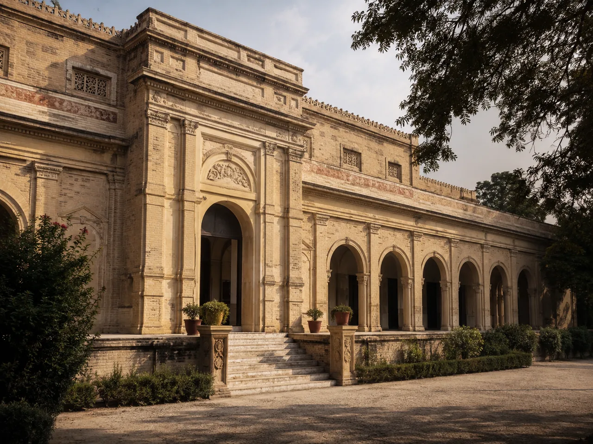

DEMO — Reading a temple landscape
A demonstration sacred-heritage story with place and programme relationships.
By Virsapur demo editor · 2026-11-01

Demo copy for evaluating a story connected to a heritage experience and district.
A demonstration sacred-heritage story with place and programme relationships.
By Virsapur demo editor · 2026-11-01

Demo copy for evaluating a story connected to a heritage experience and district.